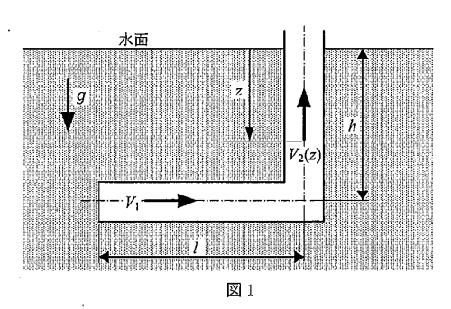

大問【1】ベルヌーイの定理と運動量保存則
図1に示すように、断面積Sの円管が水面から深さhまで水中に入り、さらに90°折れ曲がって水平に長さl伸びている。最初、水平円管の左端は仕切りでふさがれており、時刻t=0でその仕切りを取り除いたとする。

{{DIAGRAM_TITLE_1_1}}
(1) 水が垂直円管へ到達する前の水平円管内の水の流速$V_1$を求めよ。
考え方のヒント
損失や粘性を無視、外部と管出口の圧力がともに大気圧で等しいので、ベルヌーイの定理もしくはトリチェリの定理を用いる。
途中式と解答
水面を位置1、高さ$h$下の管出口を位置2とする。ベルヌーイの式：
$$P_1 + \frac{1}{2}\rho V_1^2 + \rho g h_1 = P_2 + \frac{1}{2}\rho V_2^2 + \rho g h_2$$
どちらも大気圧（$P_1 = P_2$）、水面の速度ゼロ（$V_1 = 0$）、$h_1 = h, \; h_2 = 0$より：
$$\rho g h = \frac{1}{2} \rho V_1^2 \quad \therefore \quad V_1 = \sqrt{2gh}$$
(2) 水が上昇を始めた後、垂直円管内の水面が深さ$z$になったときの水面の上昇速度$V_2(z)$を求めよ。
考え方のヒント
(1)と同様にベルヌーイの定理もしくはトリチェリの定理を用いる。エネルギー保存より、水面から管出口までの位置エネルギー変化が流体の運動エネルギーとなる。
途中式と解答
水面を位置1、高さ$ z $下の管出口を位置2としたときのベルヌーイの定理を考える：
$$\rho g z = \frac{1}{2} \rho V_2(z)^2$$
両辺を整理して上昇速度$V_2(z)$を解く：
$$g z = \frac{1}{2} V_2(z)^2 \quad \therefore \quad V_2(z) = \sqrt{2gz}$$
(3) 垂直円管内の水面が円管外部の水面の位置に到達する時刻を求めよ。
考え方のヒント
水平管を通過する時間と、垂直に上昇する時間の合計を求める。
途中式と解答
(a) 水平管部分の時間$t_1$
$$
t_1 = \frac{l}{V_1} = \frac{l}{\sqrt{2gh}}
$$
(b) 垂直上昇部分:
上昇速度の微分方程式
$$
\frac{dz}{dt} = V_2(z) = \sqrt{2g(h-z)}
$$
両辺を分離して積分
$$
\int_0^h \frac{dz}{\sqrt{2g(h-z)}} = \int_0^{t_2} dt
$$
$u = h - z$ と置換（$dz = -du$）、範囲が $z=0 \to u=h$、$z=h \to u=0$。
$$
\int_{u=h}^{u=0} \frac{-du}{\sqrt{2g\,u}} = t_2
$$
$$
\int_0^{h} \frac{du}{\sqrt{2g\,u}} = t_2
$$
$$
\int_0^h \frac{du}{\sqrt{2g\,u}} = \frac{1}{\sqrt{2g}}\int_0^h u^{-1/2} du = \frac{1}{\sqrt{2g}} [2u^{1/2}]_0^h
$$
$$
= \frac{2\sqrt{h}}{\sqrt{2g}} = \sqrt{\frac{2h}{g}}
$$
よって、垂直上昇に要する時間は $t_2 = \sqrt{\frac{2h}{g}}$
(c) 合計時間
$$
t = t_1 + t_2 = \frac{l}{\sqrt{2gh}} + \sqrt{\frac{2h}{g}}
$$
大問1のまとめ
・水平管内の流速は$V_1 = \sqrt{2gh}$
・垂直管内の水面上昇速度は$V_2(z) = \sqrt{2gz}$
・水面が最上部に到達するまでの合計時間は$t = \frac{l}{\sqrt{2gh}} + \sqrt{\frac{2h}{g}}$
重要公式・関係式
- ベルヌーイの定理：$P + \frac{1}{2}\rho v^2 + \rho g h = \text{定数}$
- $V_1 = \sqrt{2gh}$
- $V_2(z) = \sqrt{2g(h-z)}$
解法のポイント
- ベルヌーイの定理を各断面で適用
- 移動距離・速度から時間を積分で計算
注意点・間違いやすいポイント
- 圧力差や高さの取り方に注意
- 積分範囲の設定ミスに注意
流体力学のチップス
- ベルヌーイの定理はエネルギー保存の視点で理解
- 積分計算は物理的意味を意識